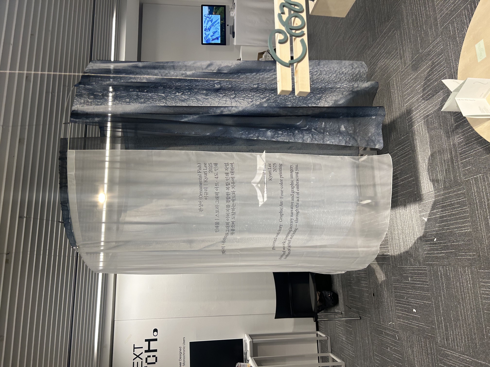
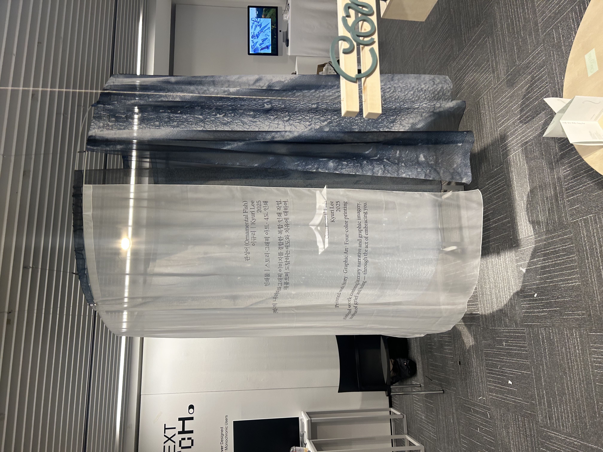

Exhibition
이 페이지는 작품의 전시 설치 과정과 전시장 모습을 기록한 사진 자료로 구성되어 있으며, 전시 환경 속에서 작품이 어떻게 배치되고 관람되는지 확인할 수 있도록 정리된 섹션입니다.
This page consists of photographic documentation capturing the installation process and exhibition space, and is organized to provide a clear view of how the work is displayed and experienced within the exhibition environment.


 
